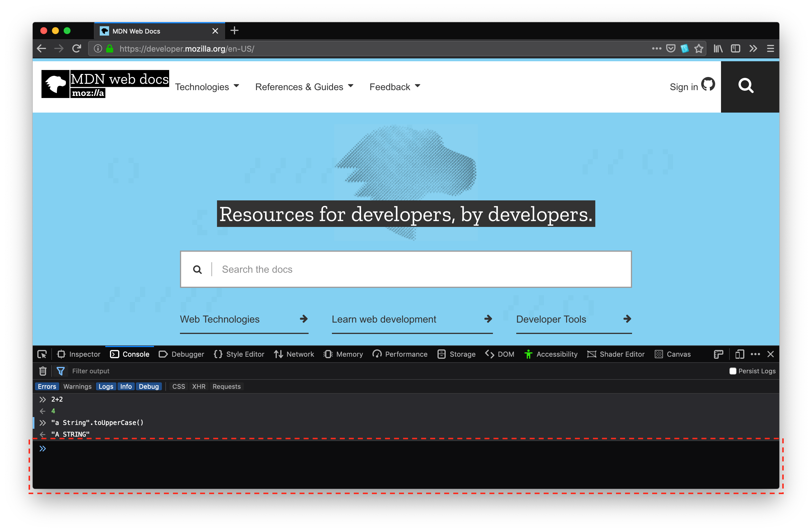

This chapter introduces JavaScript and discusses some of its fundamental concepts.
This guide assumes you have the following basic background:
The JavaScript documentation on MDN includes the following:
If you are new to JavaScript, start with the articles in the learning area and the JavaScript Guide. Once you have a firm grasp of the fundamentals, you can use the JavaScript Reference to get more details on individual objects and statements.
JavaScript is a cross-platform, object-oriented scripting language used to make webpages interactive (e.g., having complex animations, clickable buttons, popup menus, etc.). There are also more advanced server side versions of JavaScript such as Node.js, which allow you to add more functionality to a website than downloading files (such as realtime collaboration between multiple computers). Inside a host environment (for example, a web browser), JavaScript can be connected to the objects of its environment to provide programmatic control over them.
JavaScript contains a standard library of objects, such as Array, Date, and Math, and a core set of language elements such as operators, control structures, and statements. Core JavaScript can be extended for a variety of purposes by supplementing it with additional objects; for example:
This means that in the browser, JavaScript can change the way the webpage (DOM) looks. And, likewise, Node.js JavaScript on the server can respond to custom requests from code written in the browser.
JavaScript and Java are similar in some ways but fundamentally different in some others. The JavaScript language resembles Java but does not have Java's static typing and strong type checking. JavaScript follows most Java expression syntax, naming conventions and basic control-flow constructs which was the reason why it was renamed from LiveScript to JavaScript.
In contrast to Java's compile-time system of classes built by declarations, JavaScript supports a runtime system based on a small number of data types representing numeric, Boolean, and string values. JavaScript has a prototype-based object model instead of the more common class-based object model. The prototype-based model provides dynamic inheritance; that is, what is inherited can vary for individual objects. JavaScript also supports functions without any special declarative requirements. Functions can be properties of objects, executing as loosely typed methods.
JavaScript is a very free-form language compared to Java. You do not have to declare all variables, classes, and methods. You do not have to be concerned with whether methods are public, private, or protected, and you do not have to implement interfaces. Variables, parameters, and function return types are not explicitly typed.
Java is a class-based programming language designed for fast execution and type safety. Type safety means, for instance, that you can't cast a Java integer into an object reference or access private memory by corrupting Java bytecodes. Java's class-based model means that programs consist exclusively of classes and their methods. Java's class inheritance and strong typing generally require tightly coupled object hierarchies. These requirements make Java programming more complex than JavaScript programming.
In contrast, JavaScript descends in spirit from a line of smaller, dynamically typed languages such as HyperTalk and dBASE. These scripting languages offer programming tools to a much wider audience because of their easier syntax, specialized built-in functionality, and minimal requirements for object creation.
| JavaScript | Java |
|---|---|
| Object-oriented. No distinction between types of objects. Inheritance is through the prototype mechanism, and properties and methods can be added to any object dynamically. | Class-based. Objects are divided into classes and instances with all inheritance through the class hierarchy. Classes and instances cannot have properties or methods added dynamically. |
| Variable data types are not declared (dynamic typing, loosely typed). | Variable data types must be declared (static typing, strongly typed). |
| Cannot automatically write to hard disk. | Can automatically write to hard disk. |
For more information on the differences between JavaScript and Java, see the chapter Details of the object model.
JavaScript is standardized at Ecma International — the European association for standardizing information and communication systems (ECMA was formerly an acronym for the European Computer Manufacturers Association) to deliver a standardized, international programming language based on JavaScript. This standardized version of JavaScript, called ECMAScript, behaves the same way in all applications that support the standard. Companies can use the open standard language to develop their implementation of JavaScript. The ECMAScript standard is documented in the ECMA-262 specification. See New in JavaScript to learn more about different versions of JavaScript and ECMAScript specification editions.
The ECMA-262 standard is also approved by the ISO (International Organization for Standardization) as ISO-16262. You can also find the specification on the Ecma International website. The ECMAScript specification does not describe the Document Object Model (DOM), which is standardized by the World Wide Web Consortium (W3C) and/or WHATWG (Web Hypertext Application Technology Working Group). The DOM defines the way in which HTML document objects are exposed to your script. To get a better idea about the different technologies that are used when programming with JavaScript, consult the article JavaScript technologies overview.
The ECMAScript specification is a set of requirements for implementing ECMAScript. It is useful if you want to implement standards-compliant language features in your ECMAScript implementation or engine (such as SpiderMonkey in Firefox, or V8 in Chrome).
The ECMAScript document is not intended to help script programmers. Use the JavaScript documentation for information when writing scripts.
The ECMAScript specification uses terminology and syntax that may be unfamiliar to a JavaScript programmer. Although the description of the language may differ in ECMAScript, the language itself remains the same. JavaScript supports all functionality outlined in the ECMAScript specification.
The JavaScript documentation describes aspects of the language that are appropriate for a JavaScript programmer.
Getting started with JavaScript is easy: all you need is a modern Web browser. This guide includes some JavaScript features which are only currently available in the latest versions of Firefox, so using the most recent version of Firefox is recommended.
The Web Console tool built into Firefox is useful for experimenting with JavaScript; you can use it into two modes: single-line input mode, and multi-line input mode.
The Web Console shows you information about the currently loaded Web page, and also includes a JavaScript interpreter that you can use to execute JavaScript expressions in the current page.
To open the Web Console (Ctrl+Shift+I on Windows and Linux or Cmd-Option-K on Mac), open the Tools menu in Firefox, and select "Developer ▶ Web Console".
The Web Console appears at the bottom of the browser window. Along the bottom of the console is an input line that you can use to enter JavaScript, and the output appears in the panel above:

The console works the exact same way as eval: the last expression entered is returned. For the sake of simplicity, it can be imagined that every time something is entered into the console, it is actually surrounded by console.log around eval, like so:
function greetMe(yourName) {
alert("Hello " + yourName)
}
console.log(eval('3 + 5'))
The single-line input mode of the Web Console is great for quick testing of JavaScript expressions, but although you can execute multiple lines, it's not very convenient for that. For more complex JavaScript, you can use the multi-line line input mode.
To get started with writing JavaScript, open the Web Console in multi-line mode, and write your first "Hello world" JavaScript code:
(function(){
"use strict";
/* Start of your code */
function greetMe(yourName) {
alert('Hello ' + yourName);
}
greetMe('World');
/* End of your code */
})();
Press Cmd+Enter or Ctrl+Enter (or click the Run button) to watch it unfold in your browser!
In the following pages, this guide introduces you to the JavaScript syntax and language features, so that you will be able to write more complex applications.
But for now, remember to always include the (function(){"use strict"; before your code, and add })(); to the end of your code. The strict mode and IIFE articles explain what those do, but for now they can be thought of as doing the following:
{{PreviousNext("Web/JavaScript/Guide", "Web/JavaScript/Guide/Grammar_and_types")}}